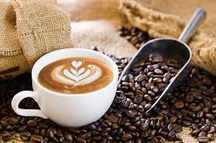
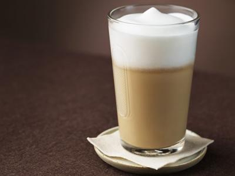
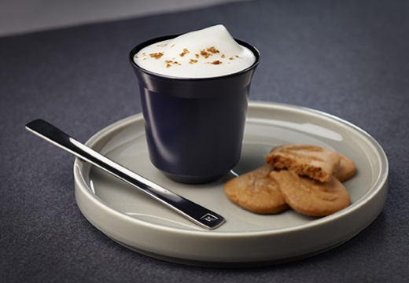

| Foto |
Descrição |
Preço |
Quantidade disponível |
|  |
Apenas um pingado de café e uma grande quantidade de leite. |
R$5,00<------ |
30 |
|  |
O tradicional clássico leva leite vaporizado e espresso,
coberto por espuma de leite |
R$5,50<------ |
40 |
|  |
É um café com leite típico da Itália, consistindo num café
expresso misturado com uma pequena quantidade de espuma de leite. |
R$5,80 <------ |
40 |
|
Um café expresso deve conter 35 ml do mais puro café. Nada além disso. |
R$5,50<------ |
35 |
 |
Nada mais é, que o expresso diluído com muita água quente. |
R$5,50<------ |
40 |
|
Mais conhecido na Itália, este café leva um creme de leite
fresco chamado Panna. Alguns regiões do Brasil não comercializam esse leite fresco
(tipo pasteurizado), por isso é comum que o Panna seja substituído pelo chantilly. |
R$6,50<------ |
40 |